You sell insurance. Yet carriers, partners, and regulators expect you to explain how complex systems protect the people who trust you. The questions pile up, deadlines draw closer, and the expertise you need feels beyond your budget.
Pistos Compliance Sentinel helps close that gap. PCS automates security checks, evidence collection, and requirements mapping. It guides your IT team toward needed fixes and brings policies, training, and recovery plans together—helping you protect entrusted information and demonstrate the work behind that protection.
PCS can’t stop the rain. But it can help you find a path through it—and get back to the work you know.
Stronger security. Happier audits.
Cybersecurity audits used to be a large-company problem. They are not anymore. Here is what changed, and what we built in response.
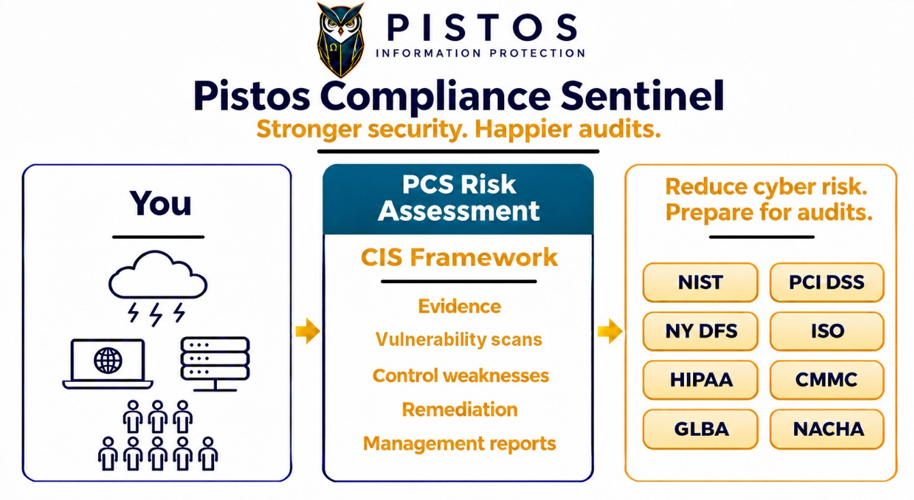
PCS gives you a clear view of your organization’s security and the work needed to improve it. Technical scan results sit alongside policies, disaster recovery and incident response plans, training records, and vendor documentation to show how well your protections hold together.
The assessment identifies gaps, helps prioritize corrective work, and organizes supporting evidence against applicable requirements. Your team can use those results to strengthen daily operations, track progress, and respond to requests from auditors, carriers, and business partners.
The reason is artificial intelligence. Skilled attackers use AI to sharpen their craft and to write exploit code that is more effective, and therefore more dangerous, than anything they could produce alone. The larger change is what AI has done for everyone else. AI coding tools have turned people with minimal hacking skill into capable, persistent adversaries, so the pool of attackers able to break into a small business has grown enormously while the cost of attacking one has fallen to nearly nothing. Regulators, carriers, and insurers understand this, which is why their requirements now reach businesses that were never audited before.
AI sharpens their craft and writes exploit code that is more effective, and therefore more dangerous, than anything they could produce alone.
AI coding tools turn people with minimal hacking skill into capable, persistent adversaries. This is the larger change.
Now within reach of a far larger pool of attackers, at almost no cost to attack. Regulators, carriers, and insurers have noticed.
Pistos Compliance Sentinel gives small and mid-sized businesses two options for managing their cybersecurity and compliance programs.
Option 1 — Manage Internally or with an MSP: The organization's personnel, or the managed service provider (MSP) that supports them, use PCS to evaluate risks, establish security priorities, maintain policies, coordinate audits and regulatory filings, oversee remediation, communicate with insurers, and manage incident response. PCS provides the evidence, assessments, compliance tracking, and remediation guidance needed to support these responsibilities, with a dedicated MSP role in the platform.
Option 2 — Engage a Fractional CISO: An experienced vCISO assumes these same operational responsibilities, using PCS to manage and maintain the security program on the organization's behalf. Agency management retains responsibility for business decisions and approvals.
The cost advantage: A full-time CISO typically costs $300,000–$450,000 annually, including benefits and overhead. A fractional CISO typically costs $60,000–$150,000 annually, depending on the size and complexity of the organization.
PCS provides the technology and evidence. The organization chooses who manages the program.
PCS provides the technology and evidence. The organization chooses who manages the program.
The organization's personnel, or the MSP that supports them, use PCS to evaluate risks, establish security priorities, maintain policies, coordinate audits and regulatory filings, oversee remediation, communicate with insurers, and manage incident response.
An experienced vCISO uses PCS to perform these same responsibilities on the organization's behalf. Management retains responsibility for business decisions and approvals.
PCS collects evidence from hardware and application inventories, security scans, policies, contracts, personnel records, and insurance documentation.
The company profile identifies applicable regulations and security requirements based on the agency's industry, size, systems, sensitive data, and obligations. PCS evaluates the evidence against security controls and maintains a centralized risk assessment.
Results feed compliance assessments, the risk register, management reports, and asset risk scores. Remediation guidance and recurring scans help correct deficiencies and keep assessments current.
Pistos uses AI at six points in this cycle: checking returned inventory workbooks, running the agency management system checks, narrating training, drafting starting risk ratings, drafting management reports, and drafting fix steps. Every AI-generated artifact is checked by a second model and approved by a Pistos compliance expert before a client sees it.
Every audit requires evidence that security controls are in place and working. This chapter shows how PCS traces that evidence through four levels, from the overall security program to the results of a specific computer’s security scan.
PCS evaluates 87 applicable security controls: 54 from the baseline security program and 33 additional controls required by applicable regulations.
Here, 72 controls are met and 15 are unmet. PCS calculates the score by dividing the controls met by the applicable controls (72 ÷ 87), producing an 83% score against a 92% target. Two additional controls are classified as not applicable and excluded from the calculation.
The dashboard displays peer comparisons and filters by regulation, control family, status, and evidence type. Each control category expands to show supporting evidence and deficiencies requiring remediation.
Selecting the Data Protection control category opens the controls within it.
Expanding a control category displays its security controls, compliance status, evidence, and applicable regulations.
Here, Data Protection contains 11 controls: 10 met and one lacking evidence. Failed checks confirm security deficiencies; missing evidence means compliance cannot be verified.
PCS provides remediation instructions and PowerShell scripts for failed checks. Missing evidence requires additional scans or documentation. Subsequent evaluations verify corrections, update control statuses and compliance scores, and track remediation progress.
Selecting control 3.6, Encrypt data on end-user devices, opens the evidence behind it.
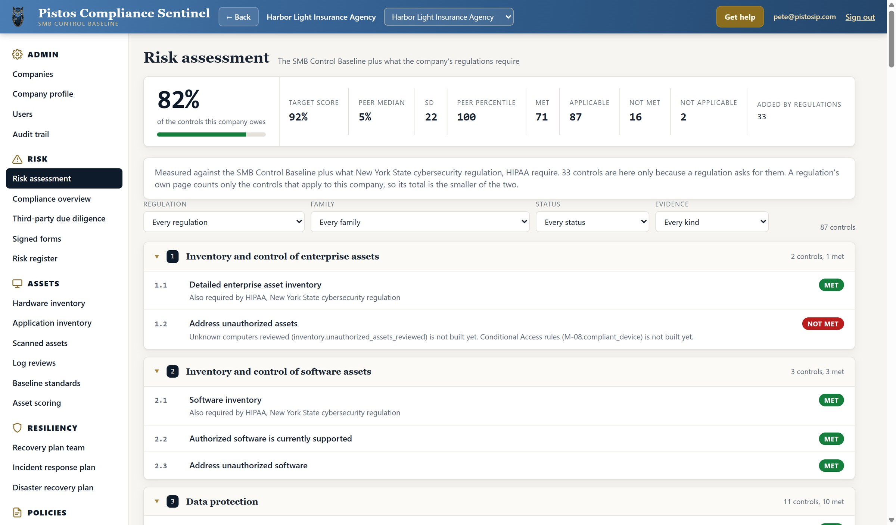
Control 3.6 assesses whether the agency protects data on its computers. PCS combines a required disk encryption scan with two supporting controls: the adopted data protection policy and a separate laptop encryption check.
Each scan independently tests a specific security requirement. PCS combines their results with policy evidence to assess the overall control, identify deficiencies, and recommend remediation.
vCISOs review the evidence and advise management, while agency management and authorized auditors make the final compliance determination.
Selecting the Disk encryption check opens the scan evidence that supports it.
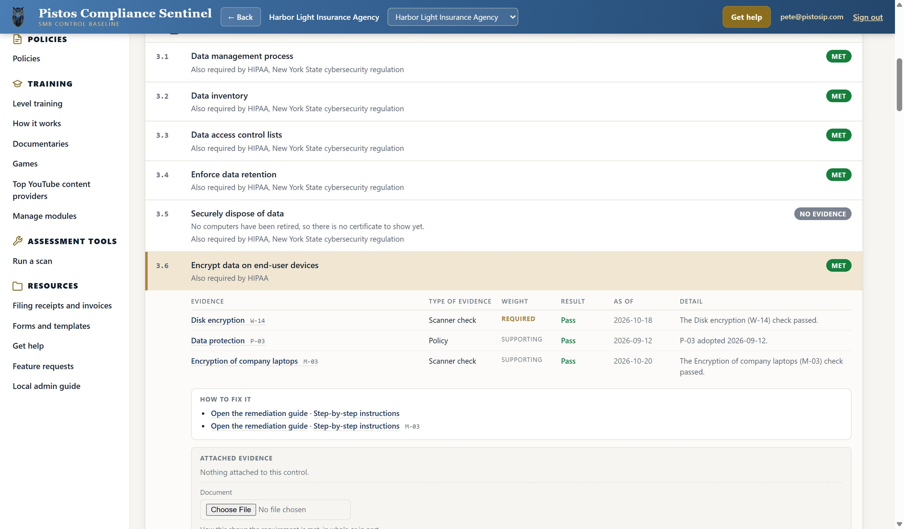
Selecting the Disk encryption check opens its evidence page: every computer tested, the date it was tested, and the result the scanner recorded.
Selecting a computer's scan opens the full Windows endpoint scan report for that machine. Each Skopein scan records the system tested, the security control, the configuration found, the test date, and the pass or fail result.
PCS evaluates this evidence, using the worst result from the past ninety days to determine compliance. Recurring scans verify corrections, update compliance scores, and maintain an auditable history.
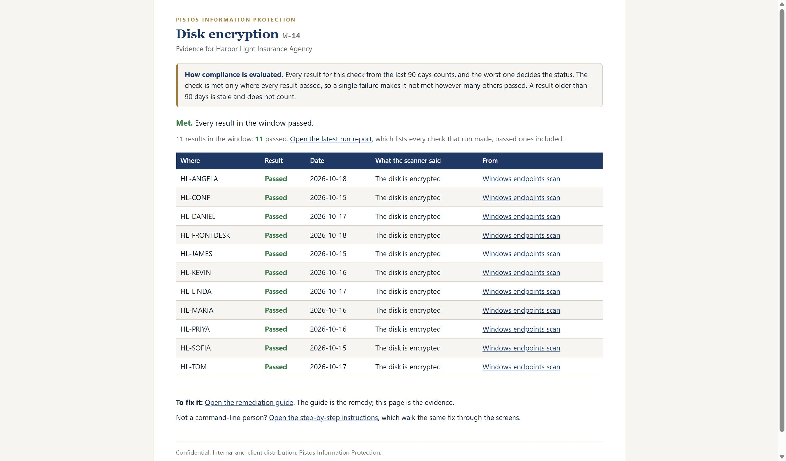
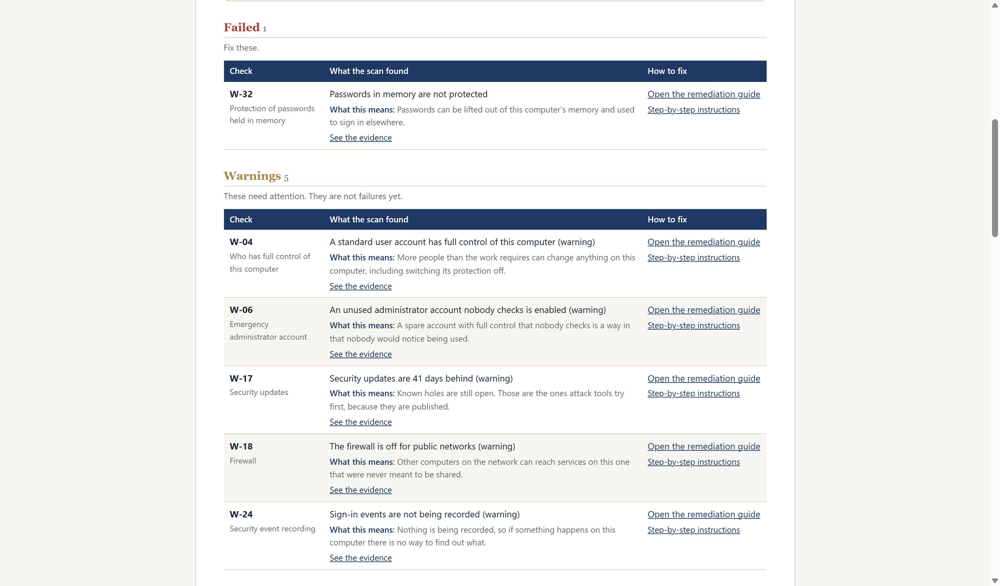
The written program, and the lists of what the company actually owns. Watch where those lists turn up again.
Security policies establish the rules for protecting company information, managing access, securing systems, and responding to threats. They define what the company requires and provide a documented basis for employee responsibilities and security controls.
PCS organizes 18 policies by CIS Control category and records their adoption dates. These dates provide evidence of formal approval and allow the risk assessment to identify and track policies that have not been adopted.
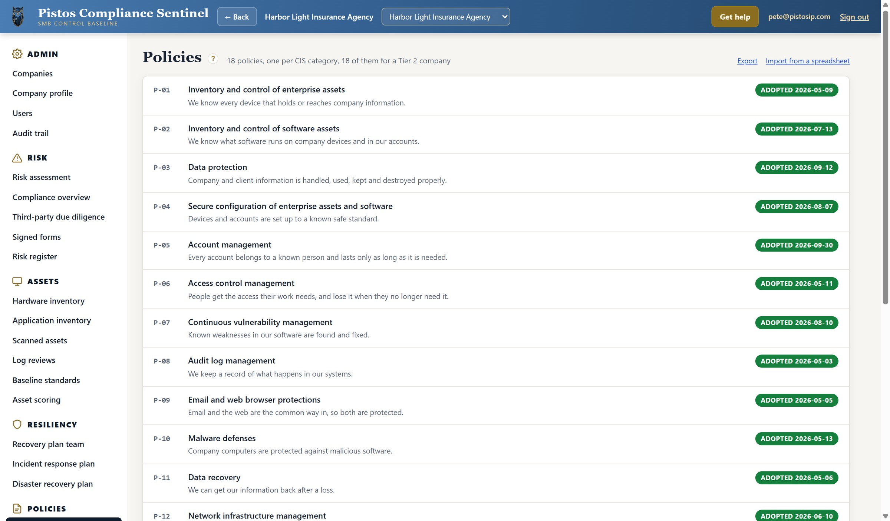
The hardware inventory is discovered and imported by Microsoft Intune, identifying each computer, assigned user, operating system, and operational importance.
PCS allows users to select which devices to assess. Skopein scans those devices against CIS Benchmarks and supplies evidence that PCS evaluates against applicable security and regulatory requirements.
Recurring scans update the evidence, track remediation progress, and keep risk assessments current.
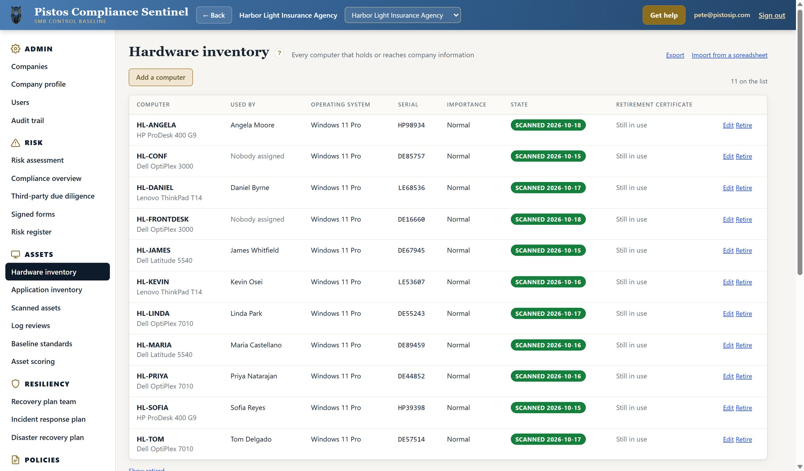
The application inventory identifies each system and cloud service, its vendor, login address, operational importance, and whether it contains sensitive data.
Here, Microsoft 365 and Applied Epic both contain sensitive data and are classified as critical. Microsoft 365 supports essential business communications and document storage, while Applied Epic is the system of record for client and policy information. Disruption or compromise of either could significantly affect agency operations.
The inventory also tracks scan dates and allows applications to be added, edited, imported, or exported.
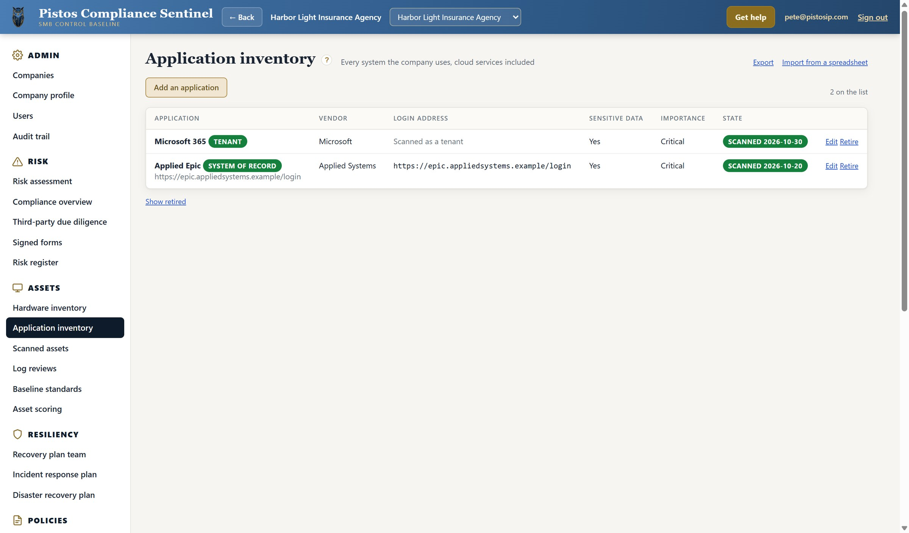
The incident response plan is activated when an account or computer is compromised, malware is detected, sensitive information is exposed, or suspicious activity suggests a breach.
The plan organizes 13 response steps covering containment, investigation, evidence preservation, threat removal, system recovery, and follow-up. Each step identifies the required action, responsible person, deadline, completion status, and notes. The first priority is to isolate affected computers without powering them off, preserving evidence for investigation.
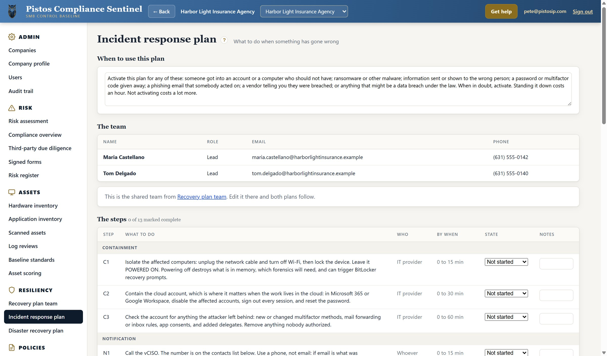
The disaster recovery plan is activated when a computer is lost, stolen, or fails; a critical cloud service becomes unavailable; or the office cannot be accessed. If a cyberattack or compromised account is suspected, the incident response plan takes priority.
The plan identifies the recovery team and provides 14 steps, beginning with employee safety and damage assessment. Each step has an assigned responsibility, deadline, completion status, and space for notes to track recovery progress.
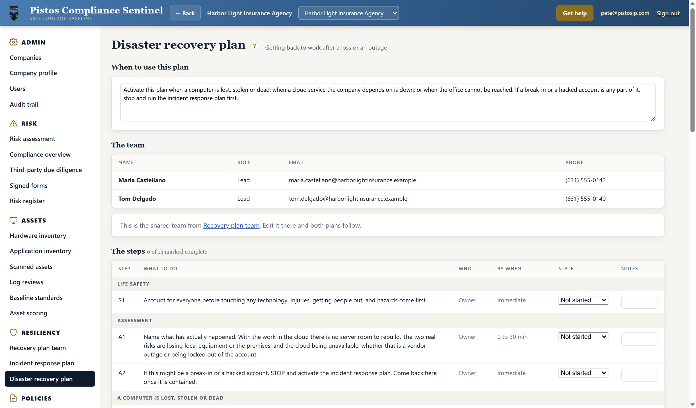
The disaster recovery plan identifies the response team, assigns responsibilities, and provides step-by-step instructions for restoring operations after a disruption.
Each recovery step identifies the required action, responsible person, and completion deadline. Progress is tracked by updating its status and recording notes. The plan also references the hardware inventory to locate affected devices and coordinate recovery or replacement.
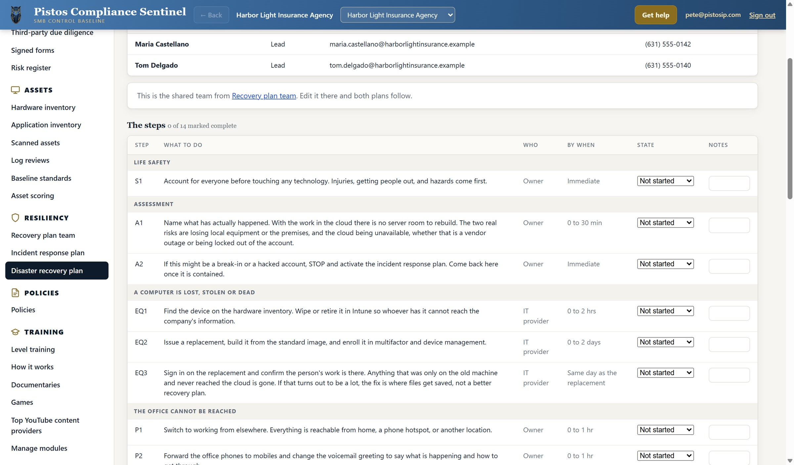
Six kinds of scan on a single page, and a report written for the owner rather than the engineer.
The Run a Scan page brings all six scan types into one view: Microsoft 365, external exposure, Windows endpoints, host information, web applications, and active application testing. For each scan, PCS displays the systems being checked, the latest results, the next scheduled run, and its current status. Users can run or schedule scans, open reports, and download PDF findings. Scans requiring a connection or credentials are clearly identified.
Selecting Open the report under any scan opens its latest report.
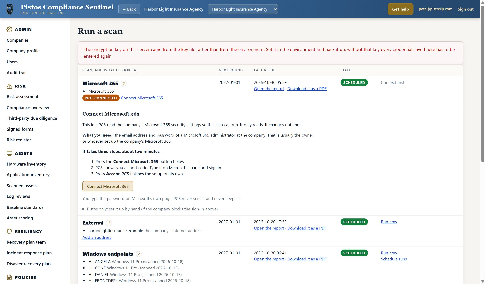
The Windows endpoint scan ran thirty-two checks on this computer: twenty-six passed, five returned warnings, and one failed. The report groups findings by business risk, worst first, and explains each one in plain English.
Every failed check carries two ways to fix it. Step-by-step instructions open a guide written for someone who is not technical, explaining what the control does, why it matters, and exactly what to do.
The remediation guide covers the same fix as PowerShell for technical staff and managed service providers, so one pass can close the same gap across every computer in the agency.
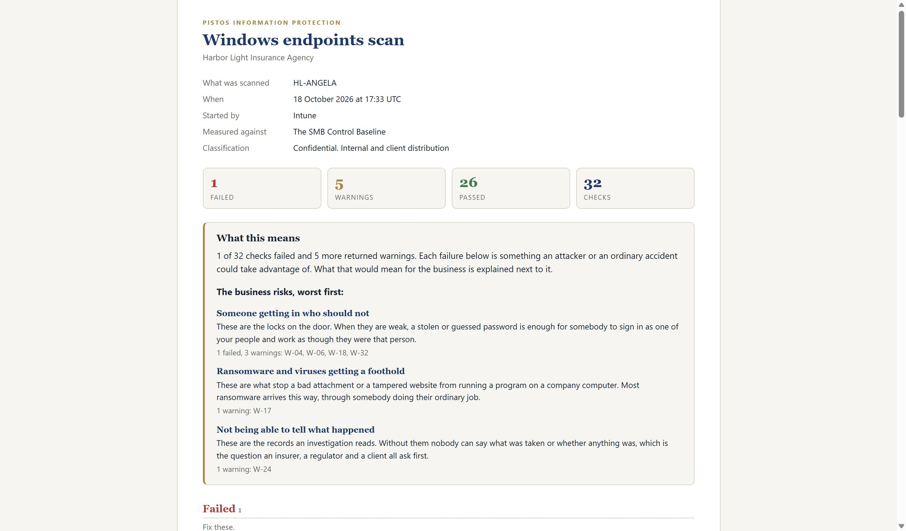
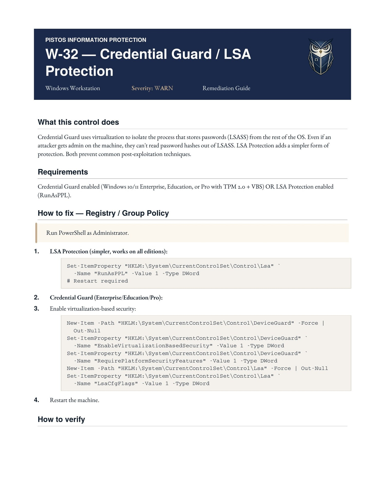
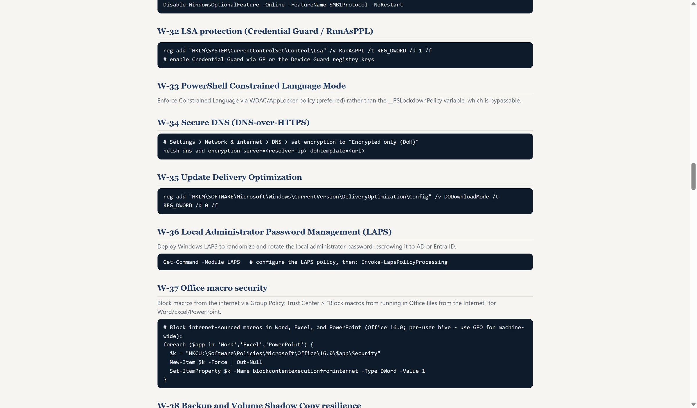
This example of Microsoft 365 scan completed 26 security checks, with 24 passing, two warnings, and no failures. Both warnings concern activity logging and record retention, which are essential for investigating security incidents.
The report explains each finding, identifies the affected setting, and provides links to supporting evidence and step-by-step remediation instructions.
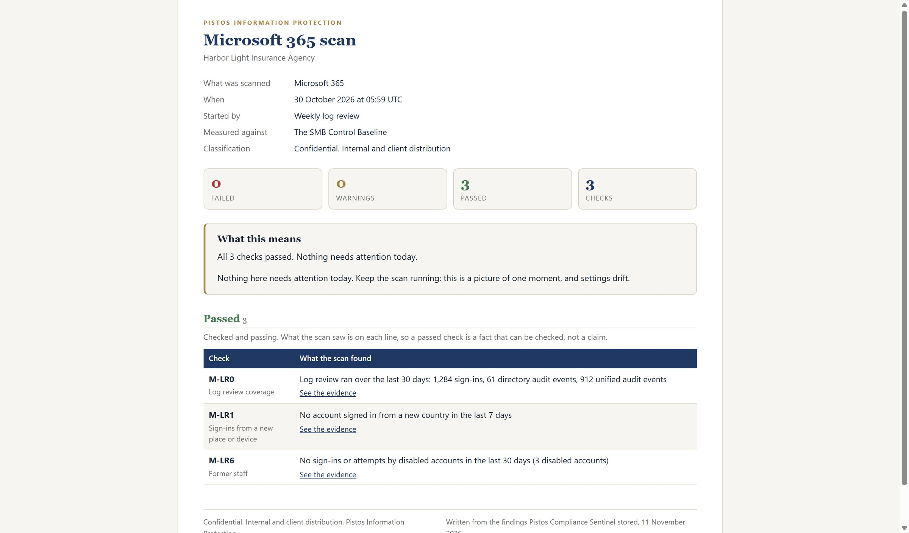
The external scan examines the company's internet presence from the outside. Five checks ran and two returned warnings. The top risk is email being faked in transit, which is exactly how wire fraud begins. The second is a domain registration about to expire, which would take the company's email and website down with it.
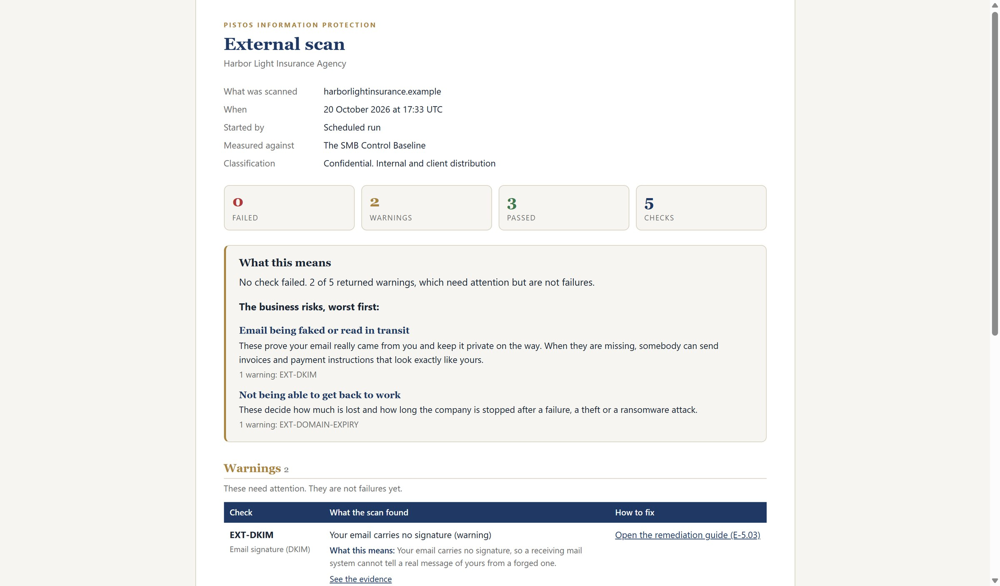
The web applications scan tested the sign-in page of the agency management system, which holds the policyholder data and is reached over the open internet. Ten checks ran and one returned a warning: the connection still accepts an old and broken encryption standard. The report explains the finding in plain language and provides step-by-step instructions for the fix.
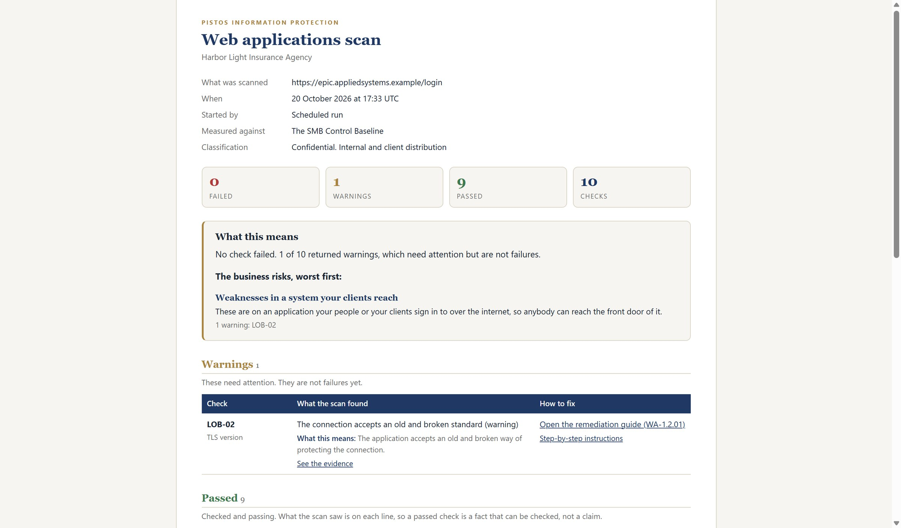
Every scan that has ever run is saved. Eleven of the eleven computers on the hardware inventory have produced a result, the weekly log reviews run on their own schedule, and every row opens the report it produced. This is the audit trail that sits behind the score.
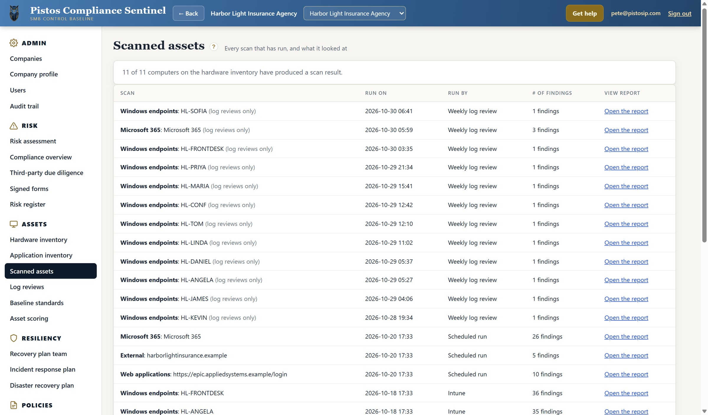
This is where everything lands. The compliance overview shows only the regulations that the company profile says apply, which for Harbor Light means NY DFS 500 and HIPAA.
For NY DFS, forty-four of fifty-eight requirements are fully met, and eighty-three percent of the controls are compliant against a target of ninety-two percent. The page states that meeting six more controls would reach the target.
Every section of the regulation gets its own bar, so the owner can see precisely which part of the rule is falling short.
PCS evaluates the same evidence against every applicable regulation. Here, HIPAA results show fifty-eight of eighty-seven requirements met and eighty-five percent control compliance against a ninety-two percent target.
The dashboard identifies eight controls needing work, seven with missing or outdated evidence, and compliance levels by HIPAA section.
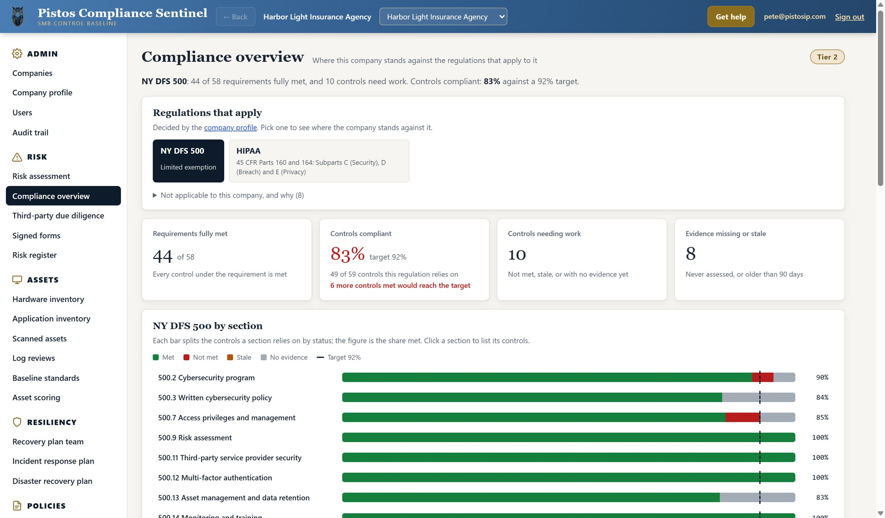
Skopein measures it, Sentinel records and maps it, and Mathisi proves your people were trained on it. All three sit under a named vCISO who signs the filings.
The scanner suite. It does not ask your staff what the policy is. It reads what the machine actually does, then writes the finding in language an owner can act on.
Everything you just saw. The profile decides which regulations apply, the regulations decide which controls are in scope, the scans populate the technical ones, and the overview shows where the agency stands.
Awareness training written for people who sell insurance, with a completion record that feeds the training control automatically.
Pistos divides the security and compliance program into three areas of responsibility. Skopein collects technical evidence directly from the agency’s systems. Pistos develops and maintains the policies, assessments, procedures, and regulatory filings. Agency owners retain responsibility for approvals, signatures, and business decisions that cannot be delegated.
Together, these activities provide a managed security and compliance program with clearly defined responsibilities and minimal demands on agency personnel.
Where the practice started, and where 700+ agency customers live.
Readiness work up to Level 2. Pistos is not a C3PAO and never claims to be, which is exactly why subcontractors trust the assessment.
Covered entities and the business associates who serve them.
Good. Keep them. An MSP runs your technology, and a CISO owns your risk and signs your filings. The MSP gets a role of its own in the platform, and we have never asked a client to switch providers.
It is a fraction of what one full-time practitioner costs, and that person would still need the scanners, the templates, and the training library you would also be buying.
That held for nine years under NY DFS. It stopped holding when carriers began pushing their own audits downstream. The agencies calling us now have just received their first questionnaire with a deadline on it.
Software measures thirty percent of it. The rest is written judgment: which controls apply, what evidence satisfies them, what risk is acceptable, and who signs for it. A dashboard leaves all of that on your desk.
Then we will scan you once and show you where you stand. Most owners stop planning to do it themselves about four pages into the first report.
We scan the environment, write the report in plain English, and walk the owner through it. There is no commitment attached. It is the fastest honest answer to the question every agency owner is quietly asking.